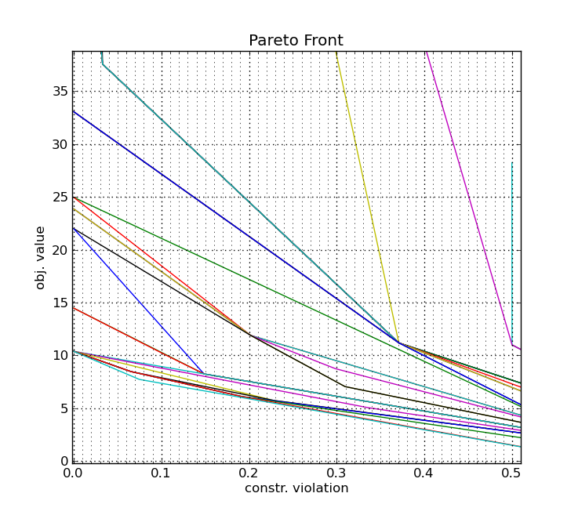

Analyzers Module#
Result analysis and monitoring components:
Analyzer: Base class for analysis components
Best: Tracks best solutions found (feasible best, infeasible best, Pareto front of
(f, CV))Convergence: Monitors optimization progress; publishes a
convergedevent usingstdorimprovmodeSensitivity: Estimates per-dimension importance via rank correlation; enables sensitivity-aware perturbations in
NearbyRestart: Detects stagnation (no improvement within
patienceevaluations) and triggers multi-start restarts; pairs with CMAES for IPOP-CMA-ESGrid: Simple spatial grid grouping of nearby points
Dedensifyer: Hierarchical grid that avoids point clustering by keeping only min/max representatives per region
Splitter: Adaptive hierarchical box-decomposition of the search space; publishes
new_splitand identifies the best leaf box. Resolution scales with the evaluation budget (leaf_size/min_leaf_size/max_leaves);split_ruleandcut_ruleselect the cut,legacy=Truerestores the fixed-resolution treeArchive: Opt-in bounded top-K of the shared result stream, ranked by penalty and unfiltered by
who; the query layer heuristics warm-start from
Analyzers#
Analyzers, just like heuristics, listen to events
and change their internal state based on local and
global data. They can emit events
on their own and they are accessible via the
analyzer() method of
the strategy.
Archive#
A bounded, shared top-K of the whole result stream — the query layer the
population heuristics need in order to warm-start from points somebody else
paid for (planning/DESIGN_warm_start_2026-09-10.md §2).
What the store offers today is either too little or too much: Results
only replays the last n rows as floats, Best collapses to a single
incumbent, and Splitter.root.results is a complete but unsorted,
unbounded list[Result]. This analyzer keeps the K best results seen so
far, ranked by the constraint handler’s penalty value and not filtered by
``who`` — an arm that asks for a seed gets the best points in the run,
whoever produced them.
Cost: one heap operation per result, O(log K). Queries are O(K log K)
and are made a handful of times per run, so they are deliberately simple.
Note
This analyzer is opt-in: initialize()
does not add it. Ship it via StrategySpec.analyzers (or
add_analyzer) so a run without warm-started arms keeps the exact
module construction order — and therefore the exact RNG streams — it had
before.
- class panobbgo.analyzers.archive.Archive(strategy, k: int = 256, name: str | None = None)[source]#
Bases:
AnalyzerBounded top-K of the shared result stream, ranked by penalty value.
- Parameters:
strategy (StrategyBase) – the owning strategy.
k – how many results to retain (default
DEFAULT_K).name (str) – optional module name; defaults to
"Archive".strategy
name
@type strategy: StrategyBase
- diverse_k(k: int, *, pool: int = 4, box: Any = None) List[Result][source]#
kwell-separated good results: greedy max–min over the toppool*k.The incumbent is always the first pick; each further pick maximises the minimum distance to everything picked so far, measured in box-normalised coordinates so the selection does not depend on the units of a dimension. This is the selector that hands a second arm a spread rather than a cluster around one basin.
- on_new_results(results: Iterable[Result]) None[source]#
Fold every result into the bounded top-K.
O(log K)per result.
- per_leaf_best(k: int) List[Result][source]#
Best point of each of the
kbestSplitterleaves.Returns
[]when noSplitteris registered — the only selector that depends on a second analyzer, and the only one that can hand out points from different basins by construction.
- top_k(k: int, *, box: Any = None, exclude_who: Any = None, fx_max: float | None = None) List[Result][source]#
The
kbest retained results, best first.- Parameters:
box – restrict to results inside this region — either a
Box(anything with acontainsmethod) or a(dim, 2)array of bounds.exclude_who – a
whotag, or an iterable of them, to skip. Matching is by heuristic name, so"PSO"also drops"PSO:1a2b…".fx_max – keep only results whose penalty is
<= fx_max.
- panobbgo.analyzers.archive.DEFAULT_K = 256#
Default number of results retained.
- class panobbgo.analyzers.best.Best(strategy)[source]#
Bases:
AnalyzerListens on all results, does accounting for “best” results, manages a pareto front of good points and emits the following events:
new_best: when a new “best” point,new_min: a point with smallest objective function value,new_cv: one with a smallercv, ornew_pareto: when a best point on the pareto front of the objective value and constraint violationhas been found.
Note
Pareto: Once the constraint violation is zero, only the objective function value is considered and future results with a positive constraint violation are ignored.
The best point (pareto) is available via the
bestattribute. There is alsocv,minandpareto.
This is an example of how several pareto fronts progress during the optimization.#
- Parameters:
strategy (StrategyBase)
name (str)
@type strategy: StrategyBase
- property cv#
The point with currently minimal constraint violation, likely 0.0. If there are several points with the same minimal constraint violation, the value of the objective function is a secondary selection argument.
- property min#
The point, with currently smallest objective function value.
- on_refresh_best(candidates)[source]#
Handle a refresh_best event, which suggests candidate points that might be better than current best due to changed criteria (e.g. updated constraint weights).
- property pareto#
- property pareto_front#
This is the list of points building the current pareto front.
Note
This is a shallow copy.
{kind=link}
- class panobbgo.analyzers.convergence.Convergence(strategy, window_size=None, threshold=None, mode=None, min_evaluations=None)[source]#
Bases:
AnalyzerAnalyzes the progress of the optimization to detect convergence or stagnation.
It listens to
new_resultsevents and tracks the history of the best objective function values. If the improvement over a specified window of evaluations is below a threshold, or if the standard deviation of the best values in the window is small enough, it publishes aconvergedevent.Configuration parameters (via
strategy.configor kwargs): -convergence.window_size(int): Number of recent best values to consider (default: 50). -convergence.min_evaluations(int): Minimum number of evaluations before checking convergence (default: window_size). -convergence.threshold(float): Threshold for relative improvement or std dev (default: 1e-6). -convergence.mode(str): ‘std’ (standard deviation), ‘improv’ (relative improvement), or ‘slope’ (linear regression slope) (default: ‘std’).Events published: -
converged: When convergence criteria are met.The event carries
reason(str) andstats(dict) with details.- Parameters:
strategy (StrategyBase)
name (str)
@type strategy: StrategyBase
- class panobbgo.analyzers.grid.Grid(strategy)[source]#
Bases:
Analyzerpacks nearby points into grid boxes
- Parameters:
strategy (StrategyBase)
name (str)
@type strategy: StrategyBase
- class panobbgo.analyzers.dedensifyer.Box[source]#
Bases:
objectDedensifyer'shelper class, that registeres points for the given box.
- class panobbgo.analyzers.dedensifyer.Dedensifyer(strategy, max_depth=5)[source]#
Bases:
AnalyzerThis analyzer stores points in a fixed hierarchical grid. It discards previously added points in order to avoid a high number of points in a close neighbourhood. The rules for discarding older points take the function value and the constraint violation into account to store the minimal and maximal representants for that region.
- Parameters:
strategy (StrategyBase)
name (str)
@type strategy: StrategyBase
- panobbgo.analyzers.splitter.CUT_RULES = ('mean', 'median')#
Where along the chosen dimension the cut goes.
"mean"is the historical point;"median"cuts through the middle order statistic. SeeSplitter.Box._split_point().
- panobbgo.analyzers.splitter.DEFAULT_CUT_RULE = 'mean'#
The default cut.
"mean", and the reasoning that said otherwise was wrong, so it is written down here rather than repeated.The observation was real:
Randomat d = 5 (Rosenbrock, 2500 evaluations) builds a tree of depth 60 — theBox.MAX_DEPTHcap — holding 61 leaves against a target of 101, with a single leaf of ~1300 points. The diagnosis — “the mean is dragged towards the stragglers of a contracting cloud, so each cut only peels a few points off” — was not: a median cut produces the identical depth 60 / 61 leaves / 1301-point leaf on the same spec. The chain isRandom’s own doing: it samples only inside the current best leaf, so every point lands in one leaf, that leaf splits, the child holding the best point becomes the next target and the sibling is never visited again. Depth then grows once per split whatever the cut rule is. Fixing it means changing the heuristic or the depth cap, not the geometry.What the median does change was then measured, paired, 3 seeds (42/7/1234, MA-BBOB standard battery, dims 2 and 5 at 500·d, instances 0-2):
Random−0.0145 (1/3 seeds),RegionUCB+0.0327 (3/3) — one inside the ±0.03 null floor and negative, the other barely outside it, mean +0.009. No mandate. And it carries one concrete structural regression: onBlocks_uniform_cj_warm2at d = 5 the median cut reachesMAX_DEPTHwith a 423-point leaf where the mean stays at depth 52 with no leaf above 36.So
"median"ships opt-in — it is genuinely the better geometry (seeSplitter.Box._split_point()) andRegionUCB, the one consumer that reads every leaf, is the case worth revisiting on a 12-seed roster.
- panobbgo.analyzers.splitter.DEFAULT_SPLIT_RULE = 'widest'#
a paired 3-seed screen (42/7/1234, MA-BBOB standard battery, dims 2 and 5 at 500·d, instances 0-2,
seed_nameshared) put"value"minus"widest", both on the budget-scaled resolution, at +0.001 forRandom, +0.024 forRegionUCB, 0.000 for the reference portfolio and −0.000 for thearchive_leafportfolio — every one of them inside the ±0.03 null floor, every CI straddling zero, and it costs ~8% more analyzer time per result. The whole measured gain of this change is the resolution (+0.048 / +0.014 / 0.000 / +0.042 against the legacy tree)."value"ships opt-in so a 12-seed roster can revisitRegionUCB, which is the only consumer that reads more than one leaf per decision.- Type:
The default split rule.
"widest", deliberately
- panobbgo.analyzers.splitter.LEAF_FILL = 0.67#
Measured mean leaf population divided by the split threshold. A leaf splits at
limitpoints and each child inherits the parent’s points it contains, so a leaf holds betweenlimit/2andlimitpoints. The realised mean is ≈0.67·limit— measured over uniform and contracting point clouds at (dim, budget) ∈ {(2,1000), (5,2500), (10,5000), (20,10000)}, where it stayed in 0.59 … 0.72 for both split rules and for the legacy threshold of 250. Used to turn a target leaf population into the split threshold; a mis-calibration only scales the leaf count, it cannot break the tree.
- panobbgo.analyzers.splitter.LEAF_SIZE = 25#
Target mean number of results per leaf. The tree’s resolution is
max_eval / LEAF_SIZEleaves, i.e. it grows with the budget instead of being pinned to the dimension (planning/DESIGN_meta_level_2026-09-10.md§1: the oldlimit = max(20, max_eval/dim**2)settles at ≈1.3·dim² leaves whatever the budget is — 5 leaves at d = 2, and the root cannot split before evaluation 250 of 1000). 25 is the smallest population for which a leaf’sbestis a statistic rather than a single draw, and it puts the d = 2 tree at ~40 leaves, the resolution the consumers (Random,RegionUCB,Archive.per_leaf_best) are written for.
- panobbgo.analyzers.splitter.MAX_LEAVES = 512#
Hard cap on the number of leaves. Everything in the analyzer that is not O(1) per result is O(#leaves) per split (
_new_box’s scans,leafs.remove), so the tree costs O(L²) over a run; 512 keeps that below a millisecond-scale contribution on the dispatcher thread at every (dim, budget) in the plan of record.
- panobbgo.analyzers.splitter.SPLIT_RULES = ('widest', 'value')#
How the split dimension is chosen.
"widest"is the historical rule (widest dimension the results differ in, function values ignored);"value"scores each candidate dimension by how strongly the objective separates across the prospective cut. SeeSplitter.Box._split_dim().
- class panobbgo.analyzers.splitter.Splitter(strategy, split_rule=None, cut_rule=None, leaf_size=None, min_leaf_size=None, max_leaves=None, legacy=False, name=None)[source]#
Bases:
AnalyzerManages a tree of splits. Each split in this tree is a
box, which partitions the search space into smaller boxes and can have children. Boxes without children areleafs.The goal for this splitter is to balance between the depth level of splits and the number of points inside such a box.
A heuristic can build upon this hierarchy to investigate interesting subregions.
- Parameters:
strategy (StrategyBase) – the owning strategy.
split_rule –
"widest"(default, seeDEFAULT_SPLIT_RULE) or"value"; seeSPLIT_RULES.leaf_size – target mean number of results per leaf (default
LEAF_SIZE). The resolution of the tree ismax_eval / leaf_sizeleaves.min_leaf_size – floor on the split threshold, so a leaf is never cut before it holds enough points to say anything. Default
2 * dim + 2— the number of points a linear trend in dim variables needs, plus a margin.max_leaves – cap on the number of leaves (default
MAX_LEAVES); it raises the split threshold rather than refusing splits, so the partition stays a proper kd-tree.cut_rule –
"mean"(default, seeDEFAULT_CUT_RULE; measured in DISCOVERY §39) or"median"— where along the chosen dimension the cut falls.legacy –
Truerestores the pre-2026-09-10 analyzer exactly —limit = max(20, max_eval / dim**2),split_rule = "widest"andcut_rule = "mean". Every other knob is ignored. Kept so both trees are runnable from one code base and a measurement can be paired.strategy
name (str)
@type strategy: StrategyBase
- class Box(parent, splitter, box)[source]#
Bases:
objectUsed by
Splitter, therefore nested.Most important routine is
split().Note
In the future, this might be refactored to allow different splitting methods.
- MAX_DEPTH = 60#
A box deeper than this is never split again. Depth grows by one per split, so the bound is generous for any real search; it exists only so a pathological point cloud cannot deepen the tree without end.
- add_result(result)[source]#
Registers and adds a new
Result. In particular, it adds the givenresultto the current box and it’s children (also all descendents).If the current box is a leaf and too big, the
split()routine is called.Note
box += resultis fine, too.
- property fx#
Function value of best point in this particular box.
- property leaf#
returns
true, if this box is a leaf. i.e. no children
- property log_volume#
Returns the logarithmic volume of this box.
- property ranges#
Gives back a vector with all the ranges of this box, i.e. upper - lower bound.
- split(dim=None)[source]#
Arguments:
- ``dim``: Dimension, along which to split. (default: `None`, and calculated)
- property volume#
Returns the volume of the box.
Note
Currently, the exponential of
log_volume
- class panobbgo.analyzers.Archive(strategy, k: int = 256, name: str | None = None)[source]#
Bases:
AnalyzerBounded top-K of the shared result stream, ranked by penalty value.
- Parameters:
strategy (StrategyBase) – the owning strategy.
k – how many results to retain (default
DEFAULT_K).name (str) – optional module name; defaults to
"Archive".strategy
name
@type strategy: StrategyBase
- diverse_k(k: int, *, pool: int = 4, box: Any = None) List[Result][source]#
kwell-separated good results: greedy max–min over the toppool*k.The incumbent is always the first pick; each further pick maximises the minimum distance to everything picked so far, measured in box-normalised coordinates so the selection does not depend on the units of a dimension. This is the selector that hands a second arm a spread rather than a cluster around one basin.
- on_new_results(results: Iterable[Result]) None[source]#
Fold every result into the bounded top-K.
O(log K)per result.
- per_leaf_best(k: int) List[Result][source]#
Best point of each of the
kbestSplitterleaves.Returns
[]when noSplitteris registered — the only selector that depends on a second analyzer, and the only one that can hand out points from different basins by construction.
- top_k(k: int, *, box: Any = None, exclude_who: Any = None, fx_max: float | None = None) List[Result][source]#
The
kbest retained results, best first.- Parameters:
box – restrict to results inside this region — either a
Box(anything with acontainsmethod) or a(dim, 2)array of bounds.exclude_who – a
whotag, or an iterable of them, to skip. Matching is by heuristic name, so"PSO"also drops"PSO:1a2b…".fx_max – keep only results whose penalty is
<= fx_max.
- class panobbgo.analyzers.Best(strategy)[source]#
Bases:
AnalyzerListens on all results, does accounting for “best” results, manages a pareto front of good points and emits the following events:
new_best: when a new “best” point,new_min: a point with smallest objective function value,new_cv: one with a smallercv, ornew_pareto: when a best point on the pareto front of the objective value and constraint violationhas been found.
Note
Pareto: Once the constraint violation is zero, only the objective function value is considered and future results with a positive constraint violation are ignored.
The best point (pareto) is available via the
bestattribute. There is alsocv,minandpareto.This is an example of how several pareto fronts progress during the optimization.#
- Parameters:
strategy (StrategyBase)
name (str)
@type strategy: StrategyBase
- property cv#
The point with currently minimal constraint violation, likely 0.0. If there are several points with the same minimal constraint violation, the value of the objective function is a secondary selection argument.
- property min#
The point, with currently smallest objective function value.
- on_refresh_best(candidates)[source]#
Handle a refresh_best event, which suggests candidate points that might be better than current best due to changed criteria (e.g. updated constraint weights).
- property pareto#
- property pareto_front#
This is the list of points building the current pareto front.
Note
This is a shallow copy.
- class panobbgo.analyzers.Convergence(strategy, window_size=None, threshold=None, mode=None, min_evaluations=None)[source]#
Bases:
AnalyzerAnalyzes the progress of the optimization to detect convergence or stagnation.
It listens to
new_resultsevents and tracks the history of the best objective function values. If the improvement over a specified window of evaluations is below a threshold, or if the standard deviation of the best values in the window is small enough, it publishes aconvergedevent.Configuration parameters (via
strategy.configor kwargs): -convergence.window_size(int): Number of recent best values to consider (default: 50). -convergence.min_evaluations(int): Minimum number of evaluations before checking convergence (default: window_size). -convergence.threshold(float): Threshold for relative improvement or std dev (default: 1e-6). -convergence.mode(str): ‘std’ (standard deviation), ‘improv’ (relative improvement), or ‘slope’ (linear regression slope) (default: ‘std’).Events published: -
converged: When convergence criteria are met.The event carries
reason(str) andstats(dict) with details.- Parameters:
strategy (StrategyBase)
name (str)
@type strategy: StrategyBase
- class panobbgo.analyzers.Dedensifyer(strategy, max_depth=5)[source]#
Bases:
AnalyzerThis analyzer stores points in a fixed hierarchical grid. It discards previously added points in order to avoid a high number of points in a close neighbourhood. The rules for discarding older points take the function value and the constraint violation into account to store the minimal and maximal representants for that region.
- Parameters:
strategy (StrategyBase)
name (str)
@type strategy: StrategyBase
- class panobbgo.analyzers.Grid(strategy)[source]#
Bases:
Analyzerpacks nearby points into grid boxes
- Parameters:
strategy (StrategyBase)
name (str)
@type strategy: StrategyBase
- class panobbgo.analyzers.Restart(strategy, patience=None, improvement_threshold=1e-06, max_restarts=10, restart_strategy='random')[source]#
Bases:
AnalyzerDetects search stagnation and publishes
restartevents.Listens to
new_results, tracks the best penalty value in a sliding window, and fires arestartevent when no sufficient improvement is found withinpatienceevaluations.Configuration parameters:
patience(int): Evaluations without improvement before restart (default: 5 * dim).improvement_threshold(float): Minimum relative improvement to reset counter (default: 1e-6).max_restarts(int): Stop restarting after this many (default: 10).restart_strategy(str): How to pick the new center. One of:"random"— uniform draw inside the box (default)."diverse"— uniform draw inside the box, picked from 20 candidates to maximize the minimum distance to previous restart centers. Strong coverage signal once a few restarts have fired."sphere"— Gaussian draw centered at the box centre withstd = ranges / 6(clipped to the box). Useful when the optimum is expected to lie inside the box rather than near its boundary; biases the restart cloud toward the centroid.
Events published:
restart(center=ndarray, reason=str): Suggested new center for search.
- Parameters:
strategy (StrategyBase)
name (str)
@type strategy: StrategyBase
- SUPPORTED_RESTART_STRATEGIES = ('random', 'diverse', 'sphere')#
- class panobbgo.analyzers.Sensitivity(strategy, min_samples=None, update_interval=50, method='spearman')[source]#
Bases:
AnalyzerEstimates per-dimension sensitivity from evaluation history.
Listens to
new_resultsevents, accumulates X and y (penalty values), and periodically computes importance scores for each dimension.Configuration parameters:
min_samples(int): Minimum evaluations before first analysis (default: 10 * dim).update_interval(int): Recompute every N new results (default: 50).method(str):"spearman"(rank correlation) or"partial"(partial correlation).
Events published:
new_sensitivity(importance=ndarray): Array of shape(dim,), values in[0, 1].
- Parameters:
strategy (StrategyBase)
name (str)
@type strategy: StrategyBase
- class panobbgo.analyzers.Splitter(strategy, split_rule=None, cut_rule=None, leaf_size=None, min_leaf_size=None, max_leaves=None, legacy=False, name=None)[source]#
Bases:
AnalyzerManages a tree of splits. Each split in this tree is a
box, which partitions the search space into smaller boxes and can have children. Boxes without children areleafs.The goal for this splitter is to balance between the depth level of splits and the number of points inside such a box.
A heuristic can build upon this hierarchy to investigate interesting subregions.
- Parameters:
strategy (StrategyBase) – the owning strategy.
split_rule –
"widest"(default, seeDEFAULT_SPLIT_RULE) or"value"; seeSPLIT_RULES.leaf_size – target mean number of results per leaf (default
LEAF_SIZE). The resolution of the tree ismax_eval / leaf_sizeleaves.min_leaf_size – floor on the split threshold, so a leaf is never cut before it holds enough points to say anything. Default
2 * dim + 2— the number of points a linear trend in dim variables needs, plus a margin.max_leaves – cap on the number of leaves (default
MAX_LEAVES); it raises the split threshold rather than refusing splits, so the partition stays a proper kd-tree.cut_rule –
"mean"(default, seeDEFAULT_CUT_RULE; measured in DISCOVERY §39) or"median"— where along the chosen dimension the cut falls.legacy –
Truerestores the pre-2026-09-10 analyzer exactly —limit = max(20, max_eval / dim**2),split_rule = "widest"andcut_rule = "mean". Every other knob is ignored. Kept so both trees are runnable from one code base and a measurement can be paired.strategy
name (str)
@type strategy: StrategyBase
- class Box(parent, splitter, box)[source]#
Bases:
objectUsed by
Splitter, therefore nested.Most important routine is
split().Note
In the future, this might be refactored to allow different splitting methods.
- MAX_DEPTH = 60#
A box deeper than this is never split again. Depth grows by one per split, so the bound is generous for any real search; it exists only so a pathological point cloud cannot deepen the tree without end.
- add_result(result)[source]#
Registers and adds a new
Result. In particular, it adds the givenresultto the current box and it’s children (also all descendents).If the current box is a leaf and too big, the
split()routine is called.Note
box += resultis fine, too.
- property fx#
Function value of best point in this particular box.
- property leaf#
returns
true, if this box is a leaf. i.e. no children
- property log_volume#
Returns the logarithmic volume of this box.
- property ranges#
Gives back a vector with all the ranges of this box, i.e. upper - lower bound.
- split(dim=None)[source]#
Arguments:
- ``dim``: Dimension, along which to split. (default: `None`, and calculated)
- property volume#
Returns the volume of the box.
Note
Currently, the exponential of
log_volume